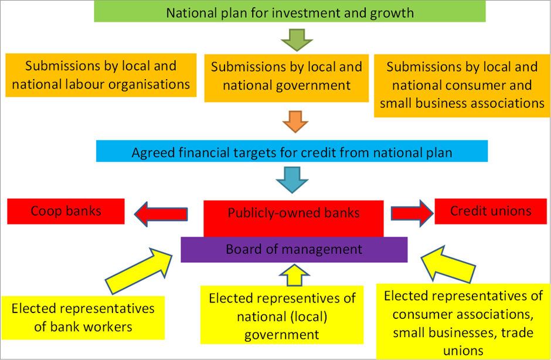

11 Banking
Roberts
Martin Wolf in the FT makes the point that bank crashes are inevitable and cannot be avoided. “Banks are designed to fail. Governments want them to be both safe places for the public to keep their money and profit-seeking takers of risk. They are at one and the same time regulated utilities and risk-taking enterprises. The incentives for management incline them towards risk-taking, just as the incentives for states incline them towards saving the utility when risk-taking blows it up. The result is costly instability.”
That’s nice to know! Marx explained it better. Capitalism is a money or monetary economy. Under capitalism, production is not for direct consumption at the point of use. Production of commodities is for sale on a market to be exchanged for money. And money is necessary to purchase commodities. But money and commodities are not the same thing, so the circulation of money and commodities is inherently subject to breakdown. It is a fallacy (contrary to Say’s law) that the production of commodities guarantees equal demand for their purchase. At any time, the holders of cash may decide not to purchase commodities at going prices and instead ‘hoard’ the cash. Then those selling commodities must cut prices or even go bust: “with the commodity splitting into commodity and money, and the value of a commodity becoming independent in the form of money, the direct exchange of products divides into the processes of sale and purchase, which are internally mutually dependent and externally mutually independent. And here is posited, at the same time, the most general and most abstract possibility of crisis.” Many things can trigger this breakdown in the exchange of money and commodities, or money for financial assets like bonds or stocks (‘fictitious capital’, Marx called it). And it can happen suddenly.
So what to do? The first solution offered is to let the market prevail. Banks that get into trouble and can’t pay their depositors and creditors must be allowed to fail, to be liquidated. That solution gets little support from governments which fear the political backlash and from economists who fear that liquidation would lead to outright slump and depression as in the 1930s.
So the fall-back solution is more and stricter ‘regulation’. Regulation could take many forms. The usual one is making banks hold more equity capital relative to their lending and investments; another is to reduce the amount of borrowing they do to invest speculatively. So there is a great paraphernalia of banking rules, the latest of which is the Basel 3, brought in after the global financial crash of 2008.
Deregulation turned the modern banking system into a series of giant ‘hedge fund’ managers speculating on financial assets or acting as conduits for tax avoidance havens for the top 1% and the multi-nationals. It may be true that international banks are better capitalised and less leveraged with bad debts after the gradual implementation of the Basel III capital and liquidity accords and the widespread adoption of ‘stress testing’, but even that can be disputed. As IMF admits: “in many countries, systemic risks associated with new forms of shadow banking and market-based finance outside the prudential regulatory perimeter, such as asset managers, may be accumulating and could lead to renewed spillover effects on banks”.
Generally, the left seems unable to come up with any solution except more regulation. Take liberal economist, Joseph Stiglitz. At the time of the Global Financial Crash, he proposed that future meltdowns could be prevented by empowering ‘incorruptible regulators’, who are smart enough to do the right thing.“[E]ffective regulation requires regulators who believe in it,” he wrote. “They should be chosen from among those who might be hurt by a failure of regulation, not from those who benefit from it.” Where can these impartial advisors be found? His answer: “Unions, nongovernmental organizations (NGOs), and universities.”
But all the regulatory agencies that failed in 2008 and are failing now were well staffed with economists boasting credentials of just this sort, yet they still manage to get things wrong.
Top regulators seem to believe that an important part of their job is to convince taxpayers that the next crash can be contained within the financial sector and won’t be allowed to hurt ordinary citizens in the ways that previous crises have.” But “these rosy claims are bullshit.”
Risks can migrate to new areas.
One other solution offered is the so-called Chicago Plan, which is promoted by Martin Wolf and some leftist post-Keynesians. Originally this was an idea of a group of economists at the University of Chicago in the 1930s who responded to the Depression by arguing for severing the link of the commercial banks between the supply of credit to the private sector and creation of money. Private banks would lose the power to create deposits by making loans, as all deposits would have to be backed by public sector debt or by bank profits. In effect, lending would be controlled directly by government. “The control of credit growth would become much more straightforward because banks would no longer be able, as they are today, to generate their own funding, deposits, in the act of lending, an extraordinary privilege that is not enjoyed by any other type of business,” says an IMF paper on the plan. “Rather, banks would become what many erroneously believe them to be today, pure intermediaries that depend on obtaining outside funding before being able to lend.” And that outside funding would be the government. The banks would still be privately owned, but could not lend. Ironically, to exist they would have to turn into outright speculative investment operations like hedge funds to make a profit. That could create even more instability in the banking system than before. The Chicago Plan would only work if the banks were brought into public ownership and made part of an overall funding and investment plan. But if that happened, there would be no need for a Chicago Plan.
What is never put forward is to turn modern banking into a public service just like health, education, transport etc. If banks were a public service, they could hold the deposits of households and companies and then lend them out for investment in industry and services or even to the government. It would be like a national credit club. We could then make a state-owned banking system democratic and accountable to the public. That means directly elected boards, salary caps for top managers, and also local participation. Way back in 2012, I presented such an idea to the Institute of Labour Studies in Slovenia, as structured below.

Roberts (2023) Bank busts and regulation
11.1 J.P.Morgan
Tooze
The ongoing banking crisis is tied to industrial policy-tech competition by way of concerns for regional business financing and considerations about the structure of the financial system itself. Should the biggest banks be allowed to dominate? What impact might that have on tech and industrial financing? This is the key concern of folks like Robert Hockett and it is rooted in deep American themes:
For much of its history, the US by law kept its banks local and sector-specific. The Founders had known first-hand the evils of concentrated metropolitan banking — ignorance of local borrowers and economic conditions, focus on short-term profits rather than long-term investments, and related problems. … Regional, community and sector-specific industrial banks like Silicon Valley Bank lent “patient capital” to startups and small businesses — the incubators of future industrial renewal. In other words, the banks were willing to wait years before expecting their startup borrowers to turn profits — essential in industries that require time to scale up before they can become profitable.
They stood ready to fuel the new growth where it was needed, knowing as they did both the special needs of their clients in particular sectors — like tech, for example — and economic conditions in the locales where their clients did business.
Capped deposit insurance is now destroying these banks.
Federal deposit insurance coverage is currently limited to $250,000. That would be plenty for you and me, but the startups and other small businesses on which our industrial recovery depends have large payrolls and weekly operating expenses. For them, $250,000 is mere chump change.
They are thus faced with a Hobson’s choice, especially in times of banking distress like the present: Retain the advantages of regionally focused, client-sensitive, sector-specific Main Street banking at risk of losing deposits in bank runs, or flee to the safety of too-big-to-fail, one-size-fits-all global Wall Street banks that know nothing of their regions’ or businesses’ special conditions or needs.
JP Morgan features in this story as the universal bank predator. It is also, of course, the most enthusiastic funder of fossil capital, as the Union of Concerned Scientists documents here. Between the Paris climate deal and the end of 2021 JP Morgan provided $ 382 billion in fossil funding.
JP Morgan’s data serve as key indicators of the state of the Treasury market.
This macroeconomic conversation connects to the banking crisis by way of the impact of the interest rate shock on the balance sheets of badly managed banks like SVB and First Republic, at which moment JP Morgan enters the story as the White Knight.
What slips through the cracks is JP Morgan’s role as a macrofinancial actor of decisive importance and as one of the forces shaping those financial markets.
REPO
Repo is the key to modern market based financial systems. This is the market in which portfolios of assets are funded by “buying” and “selling” them with a commitment to repurchase at intervals as short as overnight. It was the run on repo, not old fashioned bank runs like the ones that we saw at SVB or First Republic, or on Northern Rock in Britain in 2007, that drove the financial crisis of 2008. In a repo run the counterparties to trades that are normally churned every day in volumes of hundreds of billions of dollars, withdraw their funding. This instantly leaves huge portfolios unfunded, triggering defaults and further withdrawals. The collateral, which is the basis for repo, can be seized but the market ceases to function.
As Carolyn Sissoko showed in an important paper, published in the thick of the COVID financial crisis of 2020, the newly merged JP Morgan Chase in the late 1990s and early 2000s was pivotal to the emergence of the repo-based money market.
As Sissoko puts it in admittedly dramatic terms:
In 1997, notably the year in which the Asian Financial Crisis took place, JPMorgan moved its repo market making ‘into the bank,’ and then in 2000 became one of the core tri-party clearing banks via a merger with Chase Manhattan Corporation. The end result of this bank intermediation of the repo market was to super-charge it with implicit government guarantees, and to convert JPMorgan Chase (JPMC) into a de facto central bank implementing its own monetary policy through the repo market.
As Sissoko describes the situation in 2008.
During the height of the boom that preceded the 2007-09 crisis, there is every reason to believe that JPMC had the power to define the repo market both by pricing assets and by setting the terms on repos. Indeed, both Bear Stearns and Lehman Brothers failed when JPMC acting as a clearing bank determined that their assets were no longer adequate to support the debt they were carrying. In short, JPMC created a new role in financial markets, the dealer of last resort, a kind of central bank for securities markets that had the capacity, due to the flexibility of too-big-to-fail capital constraints, to price and fund assets over what appeared to be the long-run. Or at least that’s how it appeared until the Bear Stearns failure in 2008.
The key point here is that the growth of JPMC is not simply a corporate success story. And JP Morgan’s power is not limited to its ability to profit from its strong balance sheet or its excellent connections in Treasury, Fed and White House, to snap up rivals. The financial markets, as we know them in the US today, are to a significant extent moulded around JPMC’s business model and its decisions have macroscopic effects. This is the flipside of Jamie Dimon’s posturing as a patriotic servant of financial stability.
11.2 Repo
Tooze
What brought Northern Rock, Bear Stearns and then Lehman down was a collapse in their short-term ultra footloose market-based funding. Specifically what killed Lehman was what Gorton and Metrick called a “run on repo”.
Repo is the market, operating between major players in the financial system, through which banks like Lehman financed portfolio of mortgage backed securities and other fixed-income assets. In repo-based banking, funding is obtained not by taking deposits and then investing the funds in interest and profit-yielding assets. Funding is obtained by buying an asset, like a Treasury or a mortgage-backed security and immediately selling it, with the promise to repurchase at some point in the not too distant future, only then to repeat the operation, again and again until the bond matures, or it is disposed of. In the overnight repo market this churn takes place literally every day.
Every day collateral is given, credit is issued and then the original owner redeems the collateral the following day. And this takes place daily on the scale of trillions of dollars.
Clearly, this is spectacularly more elastic, dynamic and labile system than deposit-based banking. A run in this market consists simply in trading parties, who normally show up to sell, buy and repurchase collateral – mainly Treasuries or other fixed-income assets – one day refusing to transact with a particular counterparty.
The “run” on Lehman dwarfs anything we have seen in 2023 in terms of scale and speed.
It was the scale of the market and its structure - a highly volatile system for financing assets of durations measured in years or even decades on ultra-short-term funding - that created the risk.
Not until we see shockwaves rocking the system of market-based funding, as we did in 2007-8 and again in 2020, will 2023 really begin to register on the Richter scale of financial shocks.
it is on the constantly evolving structures of finance and on the suspiciously opaque links in the chain that we should be focusing our attention.
[Tooze (2023) Chartbook #214: Why the 2023 banking crisis does not look like 2008, or why one run is not like another.